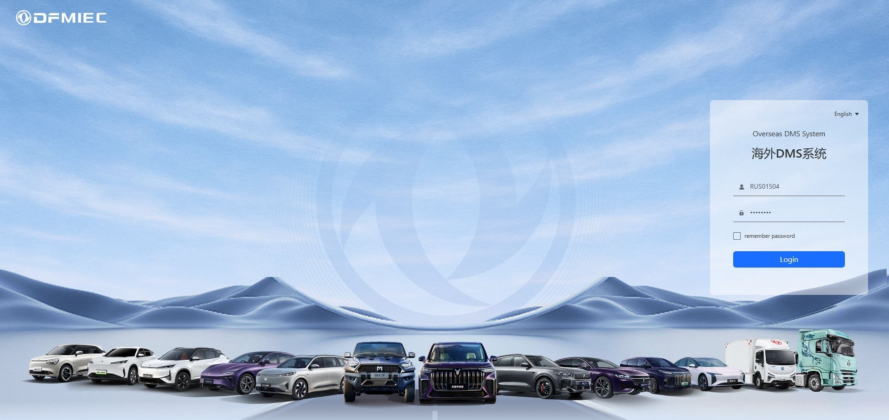
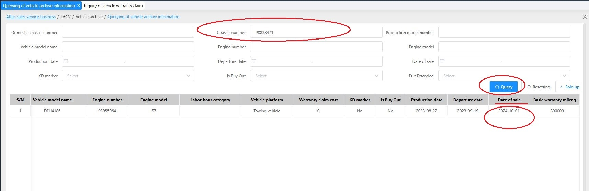
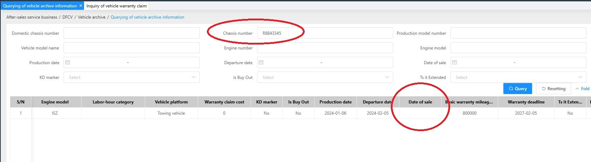
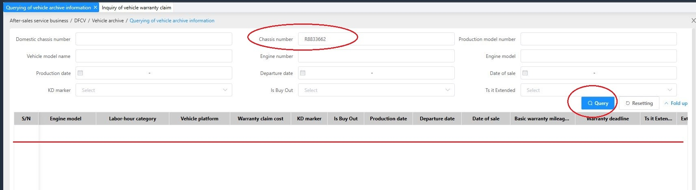

Вход в портал DMS осуществляется по ссылке - https://dms.dongfeng-global.com Язык на выбор, китайский, английский, русский, французский, и испанский. Рекомендуем использовать английский язык, в нем более адекватный перевод.

После входа, открываем общее меню по кнопке All Menus, в левой
верхней части экрана. Находим пункт Vehicle Archive, и нажимаем на
Querying of vehicle archive information. Этот пункт - это информация по
всем автомобилям на Российском рынке.
В открывшемся окне, в верхней части, мы видим поля отбора, а ниже
список всех авто, официально поставленных в Россию. Здесь представлена
информация, а также возможность поиска автомобиля по ней, такая как:
полный VIN, шасси (короткий VIN), модель, номер двигателя, модель
двигателя, дата производства автомобиля, дата ввоза, и самое важное -
дата продажи (Date of Sale). Указанная дата продажи является датой
начала гарантии, от нее начинается отсчет гарантийного срока. 
Например, чтобы проверить, на гарантии ли автомобиль VIN LGAG3DV28P8838471, необходимо ввести номер шасси (P8838471) в поле Chassis number. После ввода, нажимаем синюю кнопку Query, программа выполнит отбор, и мы увидим одну строчку, это этот найденный автомобиль. Продвинув прокрутку экрана вправо, мы видим поле Date of sale, в ней есть дата. Это означает, что автомобиль на гарантии и дата ее начала – 01.10.2024г. Соответственно, гарантия «на весь автомобиль» действует до 01.10.2025г, и гарантия на силовую линию действует до 01.10.2026г

Иногда, введя шасси, и нажав кнопку Query, как на примере ниже, вы увидите пустую колонку Date of sale (дату продажи). Это означает, что автомобиль не введен в эксплуатацию (не поставлен на гарантию). Если это автомобиль новый, еще не проданный, у вас на парковке - то так и должно быть. А если, это уже клиентский авто с номерами, считайте, что авто НЕ гарантийный, поданные по нему рекламации рассматриваться не будут. Для исправления этого момента, необходимо попросить клиента связаться с тем, кто продал автомобиль, что бы его ввели в эксплуатацию (поставили на гарантию).

Еще, вы можете столкнуться с тем, что ввели шасси, нажали кнопку Query, но машина не нашлась. Мы не рассматриваем банальной ошибки в номере шасси. Тут два варианта что это означает: 1. Машина ввезена неофициально, таких машин на рынке немного, но они все же есть. 2. Машина новая, совсем недавно продана.
Что в первом, что во втором случае, считайте машину НЕ на гарантии, работайте с ней в рамках коммерции. Рекомендуйте клиенту обратиться к продавцу, для постановки на гарантию.
